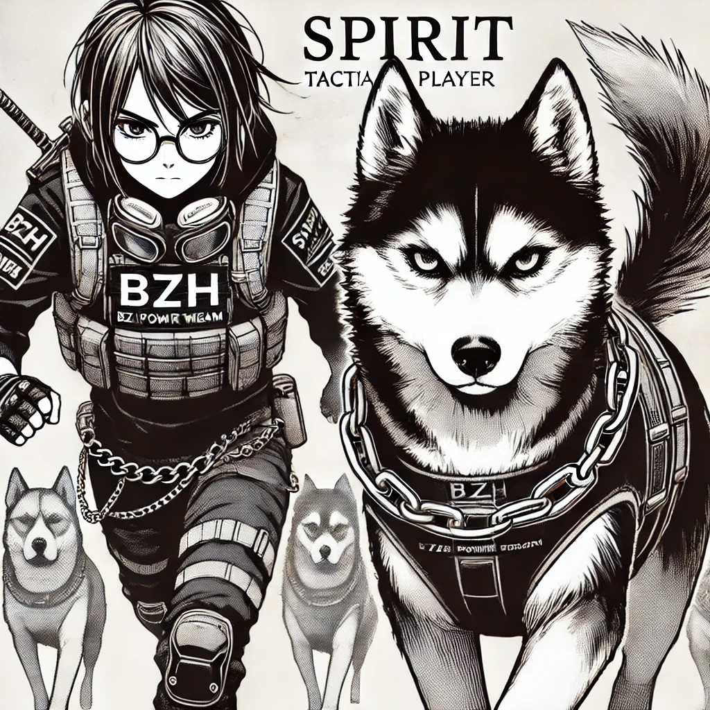

Spirit — dossier personnage
Statut
- Personnage coeur de BZH Chronicles.
- Alias TCG :
The Cooker. - Role principal : tacticien et tireur de precision.
Role narratif
Spirit represente la concentration, la lecture tactique et le tir chirurgical. Sa relation avec Spike doit rester lisible : Spike fonctionne comme compagnon, pisteur et prolongement d'action.
Rattachements croises
| Axe | Lien | Statut |
|---|---|---|
| TCG | BZH01 - set de cartes TCG | canon pour The Cooker (Spirit) |
| Duo TCG | Aligax & Spirit - The Shield and the Aim | canon / interaction a decrire |
| Companion | Spike - dossier personnage | canon pour le lien Spirit / Spike, nature exacte a confirmer |
| Musique | Musique et albums, Tracklist provisoire | a confirmer pour Spirit's Rage |
| Medias | Catalogue medias, Galerie media | reference pour assets/characters/spirit/ |
| Sources | Citations lore & personnages | provenance |
Liens internes
Points a consolider
- Clarifier son equipement principal.
- Rattacher les scenes ou Spirit agit comme pivot tactique.